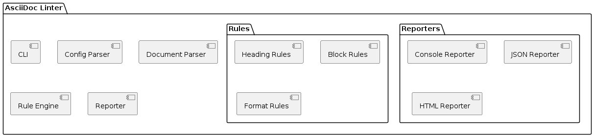

Value Proposition
-
Automated quality assurance for AsciiDoc documentation
-
Consistent documentation style across projects
-
Early detection of documentation issues
-
Reduced review effort
-
Integration with CI/CD pipelines
Value Proposition
|
Core Functions
|
Core Decisions - Good or Bad Good:
Bad:
Strategic:
|
Technologies
|
Key Stakeholder
|
|||
Quality Requirements
|
|||
Business Context External Systems:
Data Flow:
|
Components / Modules

|
||
Core Risks and Missing Information Risks:
Missing Information:
|
|||
Software Architecture Canvas by Gernot Starke, Patrick Roos and arc42 Contributors is licensed under Attribution-ShareAlike 4.0 International
Was this page helpful?
Glad to hear it! Please tell us how we can improve.
Sorry to hear that. Please tell us how we can improve.